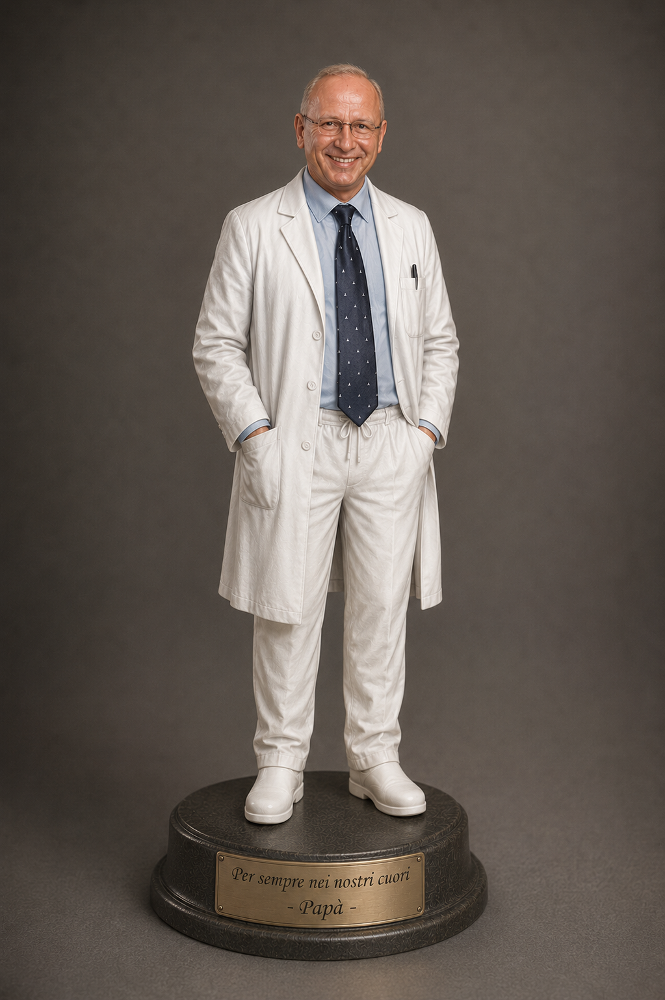

Francesco Ferro
Medico nefrologo · Salerno, 1951–2012

Un ricordo che continua
Questo sito raccoglie la storia professionale, le fotografie, i video, gli articoli e i messaggi dedicati a Francesco Ferro.
Scopri la sua carrieraRicordo
Ricordo su Facebook dell'11 Settembre 2022 Buongiorno e buona domenica a tutti. Puntata numero 66. Oggi il ricordo è per Francesco Ferro . Notizie cercate in rete, sui social, con testimonianze varie e pensieri personali.L’11 settembre della sanità salernitana. Non è casuale l’incipit del ricordo odierno, si perché questa splendida figura che non ho avuto il privilegio di conoscere personalmente, ma solo di vista e chiaramente di fama, ci lascerà molto prematuramente proprio nell’ anniversario dell’ attentato di New York. Ma partiamo dall’ inizio. Figlio del commerciante Giuseppe concessionario negli anni 60 del prestigioso marchio Autobianchi, il dottor Francesco Ferro nasce a Salerno il 12 luglio 1951 ( lo stesso giorno del mio di compleanno),dopo gli studi liceali al « Giovanni Da Procida » di via De Falco al rione Carmine, frequenta la facoltà di Medicina e Chirurgia dell’Università di Napoli. Laureatosi con un anno d’anticipo nel 1975 , alla fine dello stesso anno ottiene l’abilitazione alla professione di medico. Nell’ estate del 1978, brillantemente ottiene la Specializzazione in Nefrologia Medica a Napoli, mentre dopo un paio di anni a Roma consegue la Specializzazione in Patologia Generale, tutto ciò mentre ha già da tempo iniziato il suo percorso lavorativo. Infatti nel 1977 venne assunto dalla Clinica Tortorella fino al 1980 , quando iniziò a lavorare presso l’Ospedale di Eboli nel reparto di Nefrologia e Dialisi. Nel 1983 entra a far parte del nosocomio cittadino di Salerno, come medico, diventando nel corso degli anni dapprima aiuto primario e successivamente primario facente funzioni. Nel 2003 ottiene la nomina di Direttore della Struttura Complessa di Nefrologia e Dialisi all’ospedale «San Giovanni di Dio e Ruggi d’Aragona» di Salerno, mentre nel 2008 gli venne assegnato il ruolo di Presidente del Collegio dei Primari. Tantissime le relazioni ai congressi nazionali, anche nel ruolo di moderatore, entra a far parte della Società Italiana di Nefrologia dove costituisce il Gruppo di Studio sugli Accessi vascolari per perfezionare le tecniche sui Cateteri centrali e le Fav protesiche, inoltre nella metà degli anni 80 insieme ad altri medici apre a Salerno il centro dialisi «Nefrodisal»,infine nel 1990 nasce, sempre a Salerno, anche il centro dialisi «Kidney». Fin qui in una sintesi estrema di una piccola parte della carriera di questo nostro insigne concittadino( molte notizie estrapolate dal suo sito personale). Ma ci sono anche centinaia di testimonianze da parte di colleghi, amici, conoscenti , ma soprattutto di suoi ex pazienti che aiutano a capire fino in fondo le capacità professionali, la sua umanità, la dolcezza verso chi soffriva una patologia che accompagna la tua esistenza in attesa di un trapianto. Dicevo dei messaggi che abbondano in rete, rilevando anche aspetti ai più sconosciuti. Infatti cercando e cercando ho scoperto che il Professore ( anche se non amava questo titolo) era molto bravo col pallone ma era forte anche a bigliardino e soprattutto al tennis tavolo, come tutti i diciottenni di quella splendida generazione degli anni 60, quella della beat generation, dei figli dei fiori ecc..ecc.. era in possesso dell’auto simbolo di quella generazione che cambierà il modo di vivere. Una magnifica 500 usata, cercando…
La carriera
Dagli studi in Medicina alla direzione della Struttura Complessa di Nefrologia e Dialisi.
02Foto
Immagini personali, professionali, congressi, attestati e ricordi.
03Video
Una raccolta di filmati e interventi conservati nel sito originale.